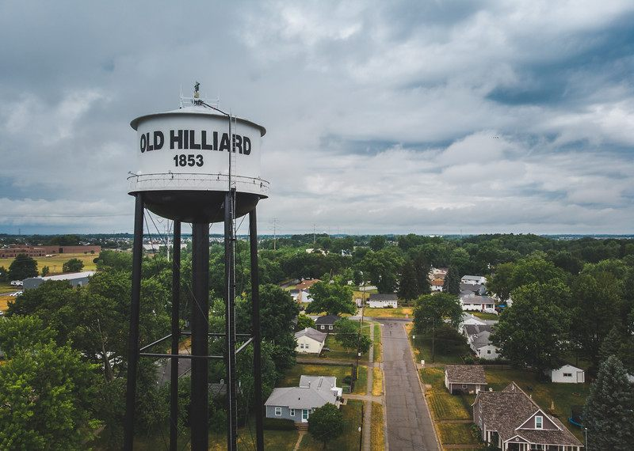

Complete Guide to Dumpster Rental in Hilliard, Ohio (2026)
Whether you're finishing a basement in a newer subdivision, renovating a home near Old Hilliard's Main Street, or tackling a full garage cleanout, this guide covers everything Hilliard residents need to know before renting a dumpster.

Hilliard sits in an interesting position among Columbus's western suburbs: it's part growing community with new subdivisions adding homes every year, and part established neighborhood where older properties along Old Hilliard's Main Street corridor are getting updated and renovated. That mix produces a wide variety of dumpster rental needs, and we handle a high volume of jobs throughout the 43026 ZIP code as a result. If you're planning a project in Hilliard and wondering how dumpster rental in Hilliard works — from sizing to permits to scheduling — this guide has everything you need.
Why Hilliard Residents Rent Dumpsters
Hilliard's housing mix means the reasons people call us vary quite a bit by neighborhood. In newer subdivisions like Ballantrae and Heritage Hill, we frequently hear from first-time homeowners who bought their house a few years ago and are finally tackling the basement finish or garage conversion they planned from day one. In older parts of town closer to Cemetery Road or along the Hilliard-Rome Road corridor, the calls tend to be kitchen and bathroom gut jobs, full-roof replacements on aging structures, and estate cleanouts on properties that have been in families for decades.
Across all of Hilliard, dumpster rentals beat the alternatives for a consistent set of reasons:
- One drop, one pickup: No repeat trips to a transfer station or waiting for weekly trash pickup to chip away at debris
- Right-sized for the job: Three size options mean you're not paying for capacity you don't need
- Keeps the worksite clean: Contractors work faster and safer when debris has a dedicated home
- Flexible rental window: Keep it 3 days or extend by the day — your project sets the schedule
- Transparent cost: One flat rate covers delivery, pickup, and disposal with no surprise fees
Quick Tip for Hilliard Homeowners
Most Hilliard residential driveways accommodate a 14-yard dumpster without issues. If you're in a newer subdivision with a wider driveway, the 20-yard is often a better fit for large renovation jobs. Not sure which size fits your project? Our dumpster size guide walks you through it step by step.
Choosing the Right Dumpster Size for Your Hilliard Project
We offer three roll-off dumpster sizes for Hilliard dumpster rentals. Here's how to match the right one to your project:
10-Yard Dumpster — Best for Small Cleanouts
The 10-yard is our most compact option, measuring approximately 10 feet long, 7.5 feet wide, and 3.5 feet tall. It holds roughly 10 cubic yards of debris — think of it as filling about three standard pickup truck beds.
Best for Hilliard projects like:
- Single-room cleanouts (spare bedroom, home office)
- Small bathroom demo (vanity, toilet, flooring)
- Garage decluttering without major construction debris
- Fence or deck section removal
- Yard waste and landscaping trimmings
Pricing: The 10-yard starts at $289, includes 3 days of rental time, and fits most driveways throughout Hilliard without issue.
14-Yard Dumpster — Most Popular for Hilliard Homeowners
The 14-yard dumpster is our most-requested size across Hilliard. At approximately 14 feet long, 7.5 feet wide, and 4.5 feet tall, it holds around 4,000 pounds of debris and handles most mid-size residential jobs comfortably.
Best for Hilliard projects like:
- Full kitchen or bathroom renovation
- Basement cleanout or partial finish
- Roofing replacement on homes up to 1,500 sq ft
- Estate cleanouts and whole-room purges
- Flooring removal throughout a home
- Moving cleanouts before listing a property
Pricing: The 14-yard rents for $319, which includes 3 days and up to 4,000 lbs of debris. Additional days are $15 each.
20-Yard Dumpster — Best for Large Renovations and New Construction
For bigger jobs — whole-home gut renovations, large roofing projects, additions, or commercial work along Hilliard's business corridors — the 20-yard gives you the capacity to load everything in one container without swapping mid-project.
Best for Hilliard projects like:
- Whole-home renovation or gut remodel
- Large roofing jobs (1,500+ sq ft)
- Full basement finishing with significant debris volume
- Commercial property cleanouts or buildouts
- New construction waste management
Pricing: The 20-yard rents for $389, includes 3 days, and is sized for Hilliard's wider driveways and commercial properties. Still unsure which size fits your project best? See our full dumpster size comparison guide.
Hilliard Dumpster Permit Requirements
This is the question we get most often from new customers, and the answer depends on one thing: where is the dumpster going?
When You DON'T Need a Permit in Hilliard
The majority of residential dumpster rentals in Hilliard don't require any permit. You're in the clear if:
- The dumpster sits entirely on your private driveway or property
- It doesn't extend into the street, sidewalk, or public right-of-way
- It doesn't obstruct a neighbor's driveway or visibility at an intersection
Most Hilliard residential driveways are wide enough and long enough to fit a 10- or 14-yard dumpster without any of these issues. If that describes your situation, you're good to book without any additional steps.
When You DO Need a Permit in Hilliard
A permit is required if your dumpster needs to sit in the street or on city right-of-way. This comes up when a driveway is too short, too steep, or physically blocked by overhead obstructions like low-hanging branches or power lines.
How to get a Hilliard right-of-way permit:
- Call the Hilliard Service Department at (614) 334-2400
- Request a Right-of-Way Permit Application for a temporary dumpster placement
- Provide your address, proposed placement location, and rental dates
- Pay the permit fee (approximately $50 for residential placements)
- Display the permit visibly on or near the dumpster
Processing typically takes 1–2 business days for standard residential permits, so apply early if your project has a tight start date.
Old Hilliard Historic District Note
Properties in the Old Hilliard historic district near Main Street may face additional placement restrictions. If your property is in or near the historic corridor, it's worth confirming placement rules with the city before booking. We can advise on street-safe positioning based on your address — contact us before booking if you're unsure.
What About HOA Restrictions?
Newer Hilliard subdivisions — particularly Ballantrae, Heritage Hill, and similar communities — often have HOAs with their own rules about dumpster placement. The good news: most HOAs don't restrict dumpsters placed entirely on your private driveway, since that's your property. Where HOAs sometimes push back is on street-side placement or extended rental periods visible from the road.
If your neighborhood has an active HOA, a quick email or call to confirm their policy before delivery day is worth doing — it takes two minutes and avoids any friction mid-project. Driveway placement is almost always allowed.
Dumpster Placement Tips for Hilliard Neighborhoods
A well-placed dumpster makes loading easier, protects your property, and keeps your neighbors on your side. Here's what we recommend for Hilliard homes:
Protect Your Driveway Surface
We use driveway protection boards on every delivery at no extra charge. If your driveway has stamped concrete, pavers, or any decorative surface, let us know when booking and we'll take extra care with placement. A few additional things to keep in mind:
- Don't place the dumpster over irrigation heads or underground utility lines
- Keep the weight distributed — don't pile all heavy debris in one corner
- Avoid overfilling above the rim, which adds weight and creates a hazard at pickup
Clearance Requirements for Delivery
Our roll-off trucks need adequate space to safely drop and retrieve the container:
- 60 feet of approach clearance (roughly four car lengths) for the truck to back in
- 23 feet of vertical clearance — watch for tree branches, garage eaves, and power lines
- Move vehicles out of the driveway before your delivery window
- Unlock any side gates if the dumpster is going into a backyard
Narrow Streets in Older Hilliard Areas
Streets near Old Hilliard and parts of the Cemetery Road corridor can be tight, especially when there are parked cars on both sides. For these addresses, we route carefully and can advise on the best drop angle when you book. A quick heads-up about your street when you call goes a long way.
What You Can and Can't Put in a Hilliard Dumpster
Accepted Materials
- Household furniture and junk
- Construction and demolition debris (wood, drywall, concrete, brick)
- Roofing shingles and underlayment
- Flooring, carpet, and tile
- Yard waste (branches, sod, leaves)
- Appliances (most — see below)
- Metal and scrap materials
- Windows, doors, and fixtures
Prohibited Materials
These items cannot go in any of our dumpsters regardless of project type:
- Hazardous waste (paint, solvents, asbestos-containing materials)
- Automotive fluids (motor oil, antifreeze, gasoline)
- Batteries (car batteries, lithium batteries)
- Tires
- Electronics with cathode ray tubes (older TVs and monitors)
- Medical or biohazard waste
- Propane tanks
Hilliard-area disposal alternative: The Solid Waste Authority of Central Ohio (SWACO) runs household hazardous waste collection events throughout the year. Visit SWACO's website to find the next event date and drop-off location near Hilliard.
Pricing and What's Included
We price Hilliard dumpster rentals the same way we price everything — one flat rate, no hidden charges. Here's exactly what you get:
Flat-Rate Pricing by Size
- 10-Yard: $289 — includes 3 days and delivery/pickup
- 14-Yard: $319 — includes 3 days, up to 4,000 lbs, and delivery/pickup
- 20-Yard: $389 — includes 3 days and delivery/pickup
Additional Costs
- Extra days: $15 per day beyond the 3-day rental period
- Weight overage: $0.03 per pound over the included weight allowance
- Street permit (if needed): ~$50, paid directly to the City of Hilliard
No Hidden Fees
We don't add environmental fees, fuel surcharges, administrative fees, or drop-off charges. What you see when you book online is what you pay.
Common Hilliard Dumpster Rental Projects
Basement Finishing in Newer Subdivisions
This is one of the most frequent calls we get from Hilliard's newer neighborhoods. Homeowners in Ballantrae, Heritage Hill, and similar communities often buy with an unfinished basement and circle back to it once they've settled in. A basement finish generates a mix of framing lumber offcuts, drywall scraps, old flooring, and packaging — a 14-yard handles most of it in one shot, and the 20-yard gives you room to work if you're also clearing out storage at the same time.
Older Home Renovations Near Old Hilliard
Properties along and around Old Hilliard's Main Street area tend to be older construction — heavier materials, original plaster walls in some cases, and decades of accumulated storage. These jobs often produce more weight per cubic yard than newer construction debris, so it's worth discussing the material mix with us when you book to make sure you're in the right size.
Roofing Replacements
Roofing is one of our most common single-day jobs across Hilliard. A 14-yard handles a full shingle teardown on most Hilliard homes (up to about 1,500 sq ft of roof surface), and the 20-yard gives roofing contractors room to work on larger structures without a swap. We deliver before your crew starts and pick up when they're done — no storage required at the yard.
Garage Cleanouts and Moving Purges
Whether you're downsizing, listing your home, or just finally clearing out 10 years of garage accumulation, a dumpster on-site lets you make fast decisions without managing bags and bins. A 10-yard is usually the right call for a garage-only cleanout; step up to a 14-yard if you're also pulling things from storage areas, a basement, or multiple rooms.
Estate Cleanouts
Families handling estate cleanouts in Hilliard appreciate having a dumpster on-site for several days so they can sort at their own pace. Our 3-day base rental gives you time to be thoughtful, and extending by the day is straightforward if you need more time.
When to Schedule Your Hilliard Dumpster
Same-Day Delivery Available
We offer same-day delivery throughout Hilliard, covering all neighborhoods in the 43026 ZIP code including:
- Old Hilliard
- Ballantrae
- Heritage Hill
- Norwich
- Britton Woods
- Hilliard Station
- Scioto Darby
- Crossing at Hilliard
- Hilliard-Rome Road corridor
Call before noon for the best same-day availability. For guaranteed morning delivery, booking the evening before is ideal.
Peak Season Timing
Like most of central Ohio, Hilliard dumpster demand peaks during:
- Spring (April–May): Garage cleanouts, landscaping projects, spring renovation starts
- Summer (June–August): Peak renovation and roofing season
- Fall (September–October): Pre-winter projects and yard cleanups
Book 3–5 days ahead during peak months to lock in your preferred delivery date.
Why Hilliard Homeowners Choose Streamline Dumpsters
As a locally operated company, we route through Hilliard's west side regularly — we know the neighborhoods, the narrower streets near Old Hilliard, and the wider driveways in newer subdivisions. Here's what sets us apart:
- West-side routing efficiency: We avoid the I-270 west interchange delays that push other haulers past their delivery windows
- All three sizes available: From a 10-yard for small cleanouts to a 20-yard for major renovations — we have the right fit for your project
- Driveway protection included: Boards under the container on every delivery, at no extra charge
- Transparent pricing: No fuel surcharges, no administrative fees, no surprises
- Easy online booking: Reserve your dumpster in under 5 minutes, or call us to talk through your project first
- 5-star rated: Check our Google reviews from Hilliard neighbors and across the service area
Frequently Asked Questions: Hilliard Dumpster Rentals
Do I need to be home for delivery?
No — as long as you specify a clear placement location when booking, we can deliver without you present. Leave a note or flag the spot if it would help, and make sure the driveway is clear of vehicles. We'll send you a confirmation when it's dropped.
What if my project takes longer than 3 days?
Extra days are $15 each. Just call us before the scheduled pickup and we'll push it back. Most customers find 3 days is enough for a focused project; the extension option is there when life gets in the way.
Can I put concrete or brick in the dumpster?
Yes, but heavy materials like concrete, brick, and tile add up fast. If you're disposing of significant quantities of masonry, it's worth discussing the volume with us before booking — we'll help you choose the right size and make sure you're not hit with unexpected overage charges.
Do you serve the Norwich Township areas outside Hilliard city limits?
Yes. We cover the full 43026 ZIP code including Norwich Township areas outside the Hilliard city boundary. If you're unsure whether your address is in our service area, call (614) 636-2343 and we'll confirm in under a minute.
Do you offer dumpsters for Hilliard commercial and contractor projects?
Yes — we work with contractors, property managers, and small businesses across Hilliard. For multi-day commercial projects or recurring needs, contact us directly to discuss scheduling and pricing.
How does Hilliard compare to other nearby cities for dumpster rental?
Pricing and availability are consistent across our service area. If you're curious how Hilliard's permit process compares to neighboring cities, our Ohio dumpster permit guide breaks it down city by city. We also serve nearby Powell with the same same-day service and flat-rate pricing.
Ready to Rent Your Hilliard Dumpster?
Whether you're finishing a basement in Heritage Hill, gutting a kitchen near Old Hilliard, or clearing out a garage before a move, Streamline Dumpsters makes the waste management piece simple. Choose your size, pick your date, and we'll handle the rest.
Get started today:
- Book your dumpster online in under 5 minutes
- Call us at (614) 636-2343 to talk through your project
- Visit our Hilliard service page for more details on what we cover
- Check our FAQ page for more common questions